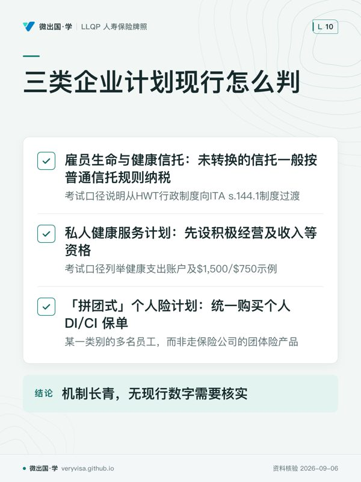

核实日期：2026-09-04｜考纲位置：A&S c2「分析可用产品」（占本模块 30%），本章内容同时触及 c3「落实推荐」（25%）——企业场景很少是"选对一份产品"就完事，而是要把诊断出的风险敞口精确匹配到对的产品组合。 复核周期：本页现行数字以公司官网产品结构为主，非年度指数化数字，360 天复核一次（下次 2027-09-01）。买卖协议的交叉持有／公司赎回机制细节见
life-ch08-business-life，本页不重复，只讲这些结构在伤残触发下的差异。
0. 这一篇解决什么问题
企业主自己干不了活，谁替公司交房租发工资？公司里最能干的那个人（不一定是老板）出事，公司怎么撑过招人培训的空窗期？几个合伙人里走了一个，剩下的人靠什么钱把股份买下来？这三个问题分别对应营业费用险（business overhead expense insurance，BOE）、关键人伤残险（key person disability insurance）、买卖协议伤残买断险（disability buyout insurance）三套机制。它们表面上都叫"企业伤残险"，实际上保的对象、给付形态、税务处理彼此都不一样，甚至彼此相反——这正是本章出题密度最高的地方。学完这一篇你应该能做三件事：①给一个企业风险场景，判断该配哪一种或哪几种产品；②算清楚 BOE 的月度封顶×给付期总封顶与结转机制；③说清楚为什么这三类产品的税务处理不能相互套用。
一、制度设计与底层逻辑：企业为什么要为"暂时干不了活"这件事单独买保险
1. 三类风险，三种"垮法"
考试口径把企业主面对的伤残风险拆成三类，每一类"垮"的方式都不一样：丧失工作能力（inability to work）——业主本人还活着，企业也没被卖掉，但固定开支（房租、水电、员工工资）照样要付，收入却断了；丧失出售能力（inability to sell）——业主想退出或必须退出（比如伤残到无法继续经营），但没有现成买家、没有定好的价钱、更没有资金完成交易；失去关键员工（loss of key employee）——受影响的不是业主本人，而是企业里那个走了会导致营收下滑、招聘替代成本飙升的人。这三类风险分别对应下表三种产品，考试口径反复强调它们互不替代：
| 需求类型 | 触发场景 | 谁投保、谁受益 | 给付形态 | 一句机制 |
|---|---|---|---|---|
| 营业费用险（business overhead expense insurance，BOE） | 业主本人（考试口径以小型独资/合伙/紧密控股企业为例，人数不是统一法定门槛）暂时丧失工作能力 | 企业投保并作受益人 | 按月报销实际发生的固定开支，给付期较短 | 保的是"业主不在的这段时间，房租水电工资照样能付出去" |
| 关键人伤残险（key person disability insurance） | 对企业至关重要的员工/股东（不一定是业主本人）伤残 | 企业投保并作受益人 | 一次性或短期给付，不与实际支出挂钩 | 保的是企业"少了这个人"造成的营收下滑与替代成本，不是这个人本身的收入损失 |
| 买卖协议伤残买断险（disability buyout insurance） | 股东/合伙人因伤残丧失工作能力且达到协议约定的触发门槛，需要退出 | 视资金结构而定（合伙人互持或公司持有），最终付给退出方 | 一次性、或部分一次性+分期，等待期极长（12–24 个月） | 保证有真金白银把残疾股东的股份买下来，让他体面退场 |
可保利益在这里怎么成立：判断标准与人寿保险一样——投保人会不会因为被保险人伤残而遭受实际经济损失。BOE 是一种特殊情形：形式上是"企业"为"业主"投保，实质是双向成立——业主的持续工作能力对企业的存续有经济价值，企业的持续经营也是业主收入的来源，二者互为因果。关键人险与买断险的可保利益更直观：企业对核心人才、合伙人对彼此的持股结构都有清楚的经济利害关系。
2. 企业组织形式仍然决定风险敞口，但角度和死亡场景不同
life-ch08-business-life 已经讲过组织形式如何决定身故场景下的风险敞口（独资无独立 ACB、合伙人连带责任、公司股权独立处置）。在伤残场景下，逻辑近似但触发点不同：伤残不触发《所得税法》下的视同处置（人还活着，股权没有转手），伤残本身一般不触发死亡式视同处置，但后续股份出售、公司赎回与保险给付仍可能有税务后果；应分别核交易和现金流——业主干不了活，收入立刻断，但企业的固定支出、贷款还款义务不会因此暂停。这正是为什么 BOE 与买卖协议融资的设计重点都是"钱从哪来"而不是"税怎么算"。
ℹ️
历史精算表只保留考试口径
考试口径引述1985年表，以45岁业主到65岁前较长期伤残概率约40%、两位共同业主至少一人约62.5%、平均持续3.2年说明风险。原始表适用人群及现行加拿大等效统计未核实，不能用这些数值推销或估个案概率。已登记的2016年资料讨论团体长期伤残准备金，不能证明个人1985表在该年统一被替换。
二、2026 现行政策与数字
2.1 三列双口径表：业主残疾风险统计——考试口径引用的是美国法定准备金表，不是加拿大消费者统计
| 考试口径 2022 说 | 2026 现行 | 考场答·柜台做 | |
|---|---|---|---|
| 业主残疾风险统计 | 引用 1985 Commissioner's Disability Table：45 岁男性业主 90 天以上残疾概率约 40%；两位共同业主至少一人残疾概率 62.5%；平均持续 3.2 年；考试口径自己脚注承认过时，指向"Appendix A" | 现行加拿大等效值与原表替换日期未核实；American Academy of Actuarie…不能支撑个人表替换结论 | 考场：题干如果直接引用这几个数字，按考试口径原始版本答；柜台：只用它的结论（伤残比想象中常见、持续时间比想象中长）说服客户重视风险，具体保额估算改用下节的收入/利润倍数法，不要背这几个百分比当现行事实 |
2.2 BOE：可报销 vs 不可报销费用清单、结转机制、税务反转
可报销的固定开支：房租/租赁费、水电燃气等公用事业费、员工薪资（不含业主本人）、商业贷款利息（不含本金）、会计/法律等固定专业服务费、设备租赁费、企业保单保费（含本险种自身保费）。不可报销的支出：业主本人的薪水/收入替代（这是本章最容易出陷阱题的一条，见第七节）、新增资本性支出（购置新设备、扩张性新增员工）、贷款本金偿还部分、库存采购。这条清单的逻辑很直接：BOE 保的是"企业在业主缺席期间原地不动、不倒闭所需要的最低开支"，不是"企业照常经营甚至扩张"。
月度与总额限制分别核：考试口径用月上限乘最长给付月数说明总资金池，并介绍结转设计。未用额度可结转，与已发生但未报完费用结转，是不同机制；后者不等于在本月提前借用尚未累积的未来额度。实际合同可能有自己的总额、期间和逐月限制。考试口径常见15–24个月给付期、15–90天等待期只作例子，RBC官方 BOE 页确认其为固定营业费用报销，具体起付与结转仍取签发条款。
税务：分别记录可扣费用与保险收入：BOE 的保费可以作为营业费用抵税，但给付应税（因为报销的开支本身在没有保险时也是可抵税支出，保险公司替企业垫付了这笔开支，等于替企业"实现"了这笔应税收入）。给付与对应可扣经营费用可能相抵，但金额、确认年度和资格未必相同，不能承诺净税效应为零——这条常被拿来跟商业贷款保护伤残险对比出题：
| 保费能否抵税 | 给付是否应税 | 净效应 | |
|---|---|---|---|
| 营业费用险（BOE） | 可以（视为营业费用） | 应税 | 按合资格开支及收入各自确认，不能保证当年完全抵消 |
| 商业贷款保护伤残险（business loan protection DI） | 不可以 | 免税 | 保费没有税收优惠，但给付到手是干净的免税现金 |
⚠️
两种产品税务处理正好相反，不能凭"抵税就划算"这种直觉判断
商业贷款保护伤残险专款专用于偿还合格商业贷款本息（考试口径举例采用3年盈利史、约$10,000/月×24个月或一次性$250,000且不超过贷款余额75%；这些不是已核实的现售统一参数），与 BOE 不能就同一笔贷款重复理赔——如果一笔商业贷款的利息已经算进 BOE 的可报销开支，就不能再用商业贷款保护险对同一笔贷款重复申请给付。题干把这两种产品的税务处理讲反、或暗示两者可以对同一笔债务叠加理赔，是常见陷阱。
2.3 关键人伤残险：考试口径示例与实际核保参数
考试口径举例的持股上限落在10%–50%之间，表示不同产品可能设不同阈值；不是持股处于这个区间一概失格，具体资格依产品；给付上限常见为年薪的100%，考试口径给出约 $15,000/月的封顶。这类具体承保参数是各保司核保指引的内部数字，RBC 与 Canada Life 的关键人险官网产品页均未公开具体的持股比例上限或月度给付封顶（这类数字通常不对外网站公开）——考试口径给出的区间应作为行业惯例值使用，实际承保额度以客户签约保司当前核保指引为准；等待期 30–90 天，给付期通常不超过 12 个月（比 BOE 更短，因为关键人险要覆盖的是"招到并培养出替代者"这段有限窗口，不是长期收入替代）。常见附加险三种：保费豁免（waiver）、复发条款（recurrent）、替代招聘费用附加险（replacement expense）——最后一项直接把猎头费、培训双薪这类具体开支纳入给付计算，比单纯的年薪倍数更贴近实际损失。
关键人伤残给付额怎么估算，与人寿关键人险不同：life-ch08-business-life 讲过的关键人寿险保额估算（收入倍数法、利润贡献法、替代与债务保障法）着眼的是"这个人永久消失"的一次性损失；关键人伤残险因为给付期通常不超过 12 个月，估算逻辑更窄——核心问题是"这段有限窗口里，企业每个月要多付出多少钱才能撑住"，通常直接按"该关键人月薪 × 一个合理倍数（覆盖招聘、培训、短期生产力损失）"再对照 $15,000/月这类保司封顶做校正，而不是像寿险那样去估算他对企业毛利润的长期贡献份额。这个差异本身就是一道好考题：题干如果把关键人险的保额估算方法在寿险与伤残险之间张冠李戴，就是常见的"同名不同算法"陷阱。
2.4 买卖协议伤残买断险：协议与实际保单对齐
定义门槛比一般 DI 更严——常见写法是"regular occupation 且完全没有工作"（不是 own occ 那种"可以从事其他工作照领不误"的宽松定义，也不是纯粹的 any occ），考试口径给出等待期区间 12–24 个月（本页 2026 现行核实：RBC 官网确认其买卖协议伤残险等待期为 360 天，约合 12 个月，落在考试口径区间下限，见 RBC Insurance）；给付形态考试口径写"常仅一次性，或 50% 一次性+分期"，RBC 现行给出更具体的选项——60 期等额月付、一次性、或两者组合（RBC Insurance）；保额常见上限 $1,000,000，部分可达 $2,000,000；考试口径示例中60岁后每年递减20%，实际保单须另核龄减表（这是本章最容易被当成固定保额忽略的一条，见第七节）；未来购买权（FPO）可能允许免新增医疗证据增购，财务证明、额度及行使窗口仍须满足；终止与转换条款处理股东退出或企业解散时保单的去留。
2.5 其他企业保险计划：一项已核实机制变化，一项法定/惯例值需分身份判断
企业还常配套三类附加计划：
| 计划 | 考试口径 2022 说 | 现行状态 |
|---|---|---|
| 雇员生命与健康信托（ELHT） | 考试口径说明从HWT行政制度向ITA s.144.1制度过渡 | CRA停止对2021年底之后适用旧HWT行政规则；未转换的信托一般按普通信托规则纳税，并非法律强制其全部转换或解散。符合s.144.1(14)/(15)条件者的视同及通知另有2022年底过渡窗口，现已过去 |
| 私人健康服务计划（Private Health Services Plan，PHSP） | 考试口径列举健康支出账户及$1,500/$750示例，账户结转依安排 | ITA s.20.01先设积极经营及收入等资格，再按雇员可比保障等分支限制自雇者的可扣金额；$1,500成人/$750未满18岁是特定分支按期间折算的扣除限制，不是所有PHSP统一供款上限。公司安排还须核PHSP资格、雇员或股东利益及合理费用，不能称无限抵税 |
| "拼团式"个人险计划（grouped disability/CI plan） | 雇主替某一类别（非任意挑选个别人）的多名员工统一购买个人 DI/CI 保单，而非走保险公司的团体险产品 | 机制长青，无现行数字需要核实 |
现行法条的出处是联邦《Income Tax Act》，不是 BC 省同名法。联邦 s.20.01(2)(b) 在符合雇员覆盖条件的期间限制为可比保障成本；s.20.01(2)(c) 对不属于该分支的期间，按年内天数比例计算 $1,500/$750 金额；如另符合 s.20.01(2)(d)，还须取该公式与可比保障成本的较低者。使用这些分支前仍须满足 s.20.01(1) 的资格，不能把扣除限制称为所有 PHSP 的供款上限。（联邦现行原文，加拿大联邦法规库；BC 同名法，定义中的 federal Act）
🔧
PHSP 在小企业主／自雇者身上最常见的用法
PHSP 报销的是医疗支出（牙科、视力、处方药这类 MSP 不覆盖或覆盖不足的项目），不是收入替代，也不是营业费用——它跟 BOE、关键人险、买断险不是同一类产品，不能互相替代，只能作为整体保障拼图里补"医疗自付部分"这一块的工具。一人公司或小型合伙企业常用它给业主自己和家庭成员报销日常医疗开支，是否可扣及是否产生福利须核实际PHSP结构、费用与参加身份；股东个人开销不能仅因由公司付款就变成免税雇员福利。
三、2026 市场：谁在卖、产品叫什么、柜台怎么说
以下公司与产品线名均于 2026-09-04 从官方页回源核实（编号 RBC Insurance 至 05），促销数字与保费一律不写；未能官方核实的产品细节不作在售事实使用。
RBC Insurance——现行个人 DI 旗舰产品 官方 BOE 产品页列明 Business Overhead Expense Insurance，是费用报销保障；Professional Series 指南把企业产品列为需另行比较的组合，不能据此认定一定是该DI的内含或附加责任，对应考试口径 5.3.1。RBC 另有独立的 Buy Sell Insurance 产品页，官网原文确认其伤残买断部分等待期为 360 天、面向 2–5 名合伙人的合伙企业或专业公司、要求在业满 3 年以上且净值达 $50,000 以上、保单维持到被保人 64 岁或离开公司为止，给付可选 60 期月付、一次性、或组合（RBC Insurance）——它解决的正是考试口径 5.4.2 讲的"买卖协议必须有资金支持"这个问题，且给出了考试口径只用区间描述的具体数字。
Canada Life——官网把"关键人保险"列为其商业保险的独立产品类别，且明确写出伤残触发条件（"if you, or a key employee is suddenly unable to work"，Canada Life），对应考试口径 5.5.1；同一产品家族下的个人 DI 页面（面向自雇者/企业主）明确写出给付可用于"购买因伤残丧失工作能力的股东或合伙人的股份"（Canada Life），对应考试口径 5.4.2 买断险；该页也提及可覆盖企业营运开支，与 BOE 机制呼应，Canada Life官方顾问指南另列明确命名的 Overhead expense plan（November 2024 series），不能因消费者网页没单列就认为没有产品。
iA Financial Group——现行 Superior Program 与 Acci-Jet Program 把"overhead expenses"列为可承保项目，官网明确定义"企业运营的固定开支，业主伤残时可获覆盖"，并标注业主/自雇者的"营业费用"给付最高可见 $6,000/月（iA Financial Group）——这是 BOE 险现行在售最具体的一条月度数字来源，对应考试口径 5.3.1；iA 页面未见关键人险或买断险的独立命名产品。
它们分别对应考试口径的哪个概念：RBC BOE 费用报销产品对应5.3.1；RBC Buy Sell Insurance 对应 5.4.2（且把考试口径"12–24 个月"的区间精确到了 360 天）；Canada Life 的关键人险栏目对应 5.5.1；Canada Life 的自雇 DI 页对应 5.4.2 与 5.3.1 的交叉；iA 的 overhead expenses 条款对应 5.3.1。
历史产品清单与当前新售产品须分开核实。已取得RBC、Canada Life及iA官方页面可作比较样本；其他公司网页未检索到独立产品，或访问失败，都不能证明其退出。未取得保险人原始公告的停售日期、原因和市场集中度不作已核事实，签发资格与现有保单服务须直接核保险人文件。
四、实务流程：三种产品各自怎么落地，代理人在哪一步做什么
4.1 买卖协议资金结构：链接而不重复
买卖协议的三种资金结构——交叉持有（cross-purchase）、公司赎回（entity purchase / share redemption）、混合法（本票法）——在死亡触发下的机制、税务后果与选择逻辑，life-ch08-business-life 第三节已经完整讲过，本页不重复。伤残触发下唯一的实质差异是：等待期极长（12–24 个月，现行 RBC 产品为 360 天），给付形态更灵活（一次性、分期、或组合，而不是寿险那种一次性死亡给付），以及60 岁后保额每年递减 20%——这三条是伤残买断险相对身故买断险独有的设计，题干如果把死亡买断的机制原样套到伤残买断上（比如假设伤残买断也是纯一次性、没有龄减），就是典型的"同一份协议、不同触发条件"混淆。
4.2 BOE 与关键人险的销售/服务流程
| 时点 | 代理人要做的动作 | 客户要准备的东西 |
|---|---|---|
| 需求分析阶段 | 核对企业员工规模是否落在 BOE 常见门槛（5 人以下更典型）、列出真正的固定开支清单，区分哪些能报、哪些不能 | 近 1–2 年的营业费用明细、房租/贷款合同 |
| 关键人识别阶段 | 判断谁是"关键人"——不一定是持股最多的人，而是走了会造成量化损失的人；核对该人持股比例是否满足具体产品阈值，不能把考试口径10%–50%当成整段失格区间 | 该人负责的项目/客户清单、对营收贡献的估算依据 |
| 核保阶段 | 提交财务资料佐证保额合理性，保额不能凭空定得很高 | 近三年财务报表、纳税申报 |
| 保单存续期 | 企业规模变化（员工数、营收）时重新核对保额是否仍然合理，提示未来购买权 | 最新营收/规模数据 |
| 理赔时 | 协助企业整理实际发生的固定开支单据（BOE 是报销制，不是定额给付） | 房租/水电/工资发放记录、供应商发票 |
4.3 PHSP 与个人 DI 的整合位置
一份完整的企业主保障方案，通常是 BOE（企业固定开支）+ 个人 DI 或团体计划（业主个人收入）+ PHSP（医疗自付部分）三层叠加，缺一层就会在对应场景下出现保障空白：只有 BOE 没有个人 DI，业主自己没有收入来源；只有个人 DI 没有 BOE，企业固定开支没人管；有了这两层，PHSP 补的是两者都不管的日常医疗账单。第六节的三个案例会分别展示这三层怎么落地到具体人身上。
五、历史资料与现行投保资格分开核对
历史产品清单与当前新售产品须分开核实。已取得RBC、Canada Life及iA官方页面可作比较样本；其他公司网页未检索到独立产品，或访问失败，都不能证明其退出。未取得保险人原始公告的停售日期、原因和市场集中度不作已核事实，签发资格与现有保单服务须直接核保险人文件。
历史产品清单与当前新售产品须分开核实。已取得RBC、Canada Life及iA官方页面可作比较样本；其他公司网页未检索到独立产品，或访问失败，都不能证明其退出。未取得保险人原始公告的停售日期、原因和市场集中度不作已核事实，签发资格与现有保单服务须直接核保险人文件。
ELHT 与 HWT 的变化主要是税务制度过渡。2018年联邦提出结束HWT旧行政待遇；CRA自2021年底后不再适用该套规则。未转换者一般按普通信托纳税，符合条件的过渡选择另按ITA s.144.1办理，不能把税务优惠终止叙述为所有旧信托被强制撤销。
六、案例
案例一：列治文诊所——BOE 月度封顶、结转机制怎么算
列治文一家小型牙科诊所，业主一人执业加 3 名员工，投保 BOE：月度封顶 $8,000，给付期 24 个月，总封顶 $8,000 × 24 ＝ $192,000。假定业主已度过等待期，随后六个月均符合失能定义及报销条件，费用如下（房租、员工工资、水电、贷款利息、会计费）：
| 月份 | 实际固定开支 | 当月报销 | 说明 |
|---|---|---|---|
| 第 1 个月 | $7,200 | $7,200 | 低于封顶，剩余 $800 结转 |
| 第 2 个月 | $8,900 | $8,800 | 超支 $900，用第 1 个月结转的 $800 补一部分，实报 $8,000+$800＝$8,800 |
| 第 3–6 个月 | 各 $8,000 | 各 $8,000 | 持平封顶，无结转变化 |
六个月合计报销 $7,200 ＋ $8,800 ＋ $8,000×4 ＝ $48,000，远低于 $192,000 的总封顶，实际费用$48,100中报销$48,000，仍有第二个月的$100未报销；本例只设额度结转，不另设超支费用结转。这一笔给付需要计入诊所应税收入，但当初支付的房租、工资、水电本身也是可抵税的营业费用——两相抵消，诊所实际税负变化很小。业主的个人薪水本身不在这份 BOE 的报销范围内，他失能期间的个人收入需要靠单独的个人 DI 或团体计划来补。
案例二：素里两位合伙人——买卖协议伤残买断怎么触发、怎么给付
素里一家会计师事务所由两位合伙人共同经营，签有买卖协议并配套伤残买断险，等待期 360 天（现行 RBC 结构），定义为"regular occupation 且完全没有工作"。合伙人甲因慢性病导致无法继续执业，从满足保单伤残定义并持续失能之日起按条款计算等待期，不能直接用确诊日起算；协议另有自己的买卖触发条件。事务所选择的给付形式是60 期等额月付而非一次性——好处是不需要一次性抽调大额现金，须由协议确定买方如何向甲付款，并核保险金收款人与60期给付怎样衔接；保险分期不等于乙必须以自有资金独担五年付款，期间事务所的现金流规划必须把这笔固定支出纳入考虑。若甲在 62 岁触发买断（保单约定 60 岁后每年递减 20%），实际可用保额已经从原始保额打了折扣——这也是为什么买卖协议应当定期复核，而不是签一次就一劳永逸。
案例三：一人公司——按费用与经济利益判断需要
本拿比建筑设计顾问以一人有限公司经营，没有雇员。先列家庭生活费、公司固定开支、既有储备及客户项目受损成本：若固定开支较小且储备充足，可以合理自留BOE层风险，但不是一人公司依法不能投保。公司可能对业主的工作能力有经济利益，关键人产品是否接受高持股者还要看核保条件，不能仅因业主与关键人同一人就否认可保利益。本例假定比较后个人DI与合资格PHSP优先，公司固定费用由储备承担，并记录储备可撑多久。以后引入合伙人或核心员工，再核买卖融资与关键人需要。
七、考试陷阱与双口径清单
- BOE 不报销业主自己的薪水（陷阱形态：范围混淆）。它保的是企业的固定运营开支，不是业主的个人收入替代——题干如果暗示"BOE 给付可以直接补贴业主本人的生活费"，是常见错误。业主个人收入损失要靠个人 DI 或团体计划来补。
- BOE 与商业贷款保护伤残险的税务处理正好相反（陷阱形态：机制混淆）。BOE 保费可抵税、给付应税，净效应接近抵消；商业贷款保护险保费不可抵税、给付免税。题干如果说两者税务处理"一样"或"顺序反了"，都是错的。
- 关键人险的给付付给企业，不是付给受伤的那个人（陷阱形态：受益人错配）。关键人险的受益人始终是企业本身，用来弥补企业的营收下滑与替代成本——题干如果暗示给付会直接进入关键员工个人账户，混淆了它与个人 DI 的受益结构。
- 关键人险的持股上限 10%–50% 是区间，不是固定数字（陷阱形态：把区间当定值）。各保司标准不同，考试口径给出的是常见区间；题干如果给出一个具体数字并暗示这是"唯一正确门槛"，要留意这只是行业惯例区间的一个样本值。
- 伤残买断险 60 岁后每年递减 20%，不是固定保额到终身（陷阱形态：忽略递减条款）。案例二里合伙人甲 62 岁触发买断时可用保额已经打折——题干如果按原始投保额直接计算给付，忽略了年龄递减这一步，就会算错。
- 买卖协议没有资金支持只是一纸空文（陷阱形态：漏算一步，与 life-ch08 同一条纪律的伤残版本）。协议本身只约定"谁买、什么价"，没有寿险或伤残买断险的资金支持，触发时协议可能无法真正执行。
- 伤残买断险的定义门槛比一般 DI 更严（陷阱形态：定义级别混淆）。它常用"regular occupation 且完全没有工作"这种复合门槛，比单纯的 own occ 更严——题干如果按 own occ 的宽松标准（可以从事其他工作照领不误）去判断买断险是否触发，会得出错误结论。
- 交叉持有随股东数量增加会迅速变得难以管理（陷阱形态：忽略规模效应，与 life-ch08 一致的机制在伤残场景下同样成立）。三位以上股东用交叉持有需要的保单数量按排列组合式增长，题干如果暗示"股东数量不影响结构选择"，忽略了这条现实约束。
双口径清单（考场 vs 柜台）：① 业主残疾风险统计——考场按考试口径 1985 年精算表数字答，柜台只用其结论性判断，不背具体百分比，原始统计及替换日期未核实，不作为现行概率（本页 2.1）；② 关键人险给付上限约 $15,000/月——考试口径行业惯例值，柜台需按具体保司现行核保指引核实，不能直接照搬（本页 2.3）；③ 买卖协议伤残买断等待期——考试口径给区间 12–24 个月，柜台按具体保单条款（RBC 现行 360 天，本页 2.4）；④ PHSP 供款上限 $1,500/$750——柜台先确认客户是自雇适用s.20.01的哪项分支、是否有合资格雇员，以及公司安排是否符合PHSP和雇员福利条件（本页 2.5）。
边学边测：本章题库共 40。
术语双语表
| en | zh | 一句机制 |
|---|---|---|
| business overhead expense (BOE) insurance | 营业费用险 | 报销企业固定运营开支，不含业主本人薪水与新增资本支出 |
| business loan protection DI | 商业贷款保护伤残险 | 专款偿还合格商业贷款本息，税务处理与 BOE 正好相反 |
| key person disability insurance | 关键人伤残险 | 企业为核心人才投保，弥补约定伤残导致的营收下滑与替代成本；身故责任另看寿险 |
| disability buyout insurance | 伤残买断险 | 为买卖协议融资的专项保单，等待期长（12–24 个月），龄减依签发条款 |
| buy/sell agreement (disability trigger) | 买卖协议（伤残触发） | 约定伤残达一定期限后强制买卖，锁定谁买谁卖何价何时 |
| cross-purchase agreement | 交叉购买协议 | 合伙人/股东互相持有对方保单，互相买断，机制细节见 life-ch08 |
| entity purchase agreement / share redemption | 主体购买（股份赎回）协议 | 企业本身持有全部保单，买断并注销退出方股份 |
| carryover provision | 结转条款 | BOE 未用完的月度额度或超支部分在月份间互相调剂，总封顶不变 |
| waiver of premium rider | 保费豁免附加险 | 理赔期内保费豁免，常见于关键人险与个人 DI |
| recurrent disability clause | 复发条款 | 同因复发在窗口内视为同一次残疾，不重新起算等待期 |
| replacement expense rider | 替代招聘费用附加险 | 把猎头费、培训双薪等具体开支纳入关键人险给付计算 |
| future purchase option (FPO) | 未来购买权 | 可按条款免新增医疗证明，仍核财务条件、额度及窗口 |
| Employee Life and Health Trust (ELHT) | 雇员生命与健康信托 | ITA s.144.1规定的福利信托；HWT旧行政税务待遇于2021年底终止 |
| Health and Welfare Trust (HWT) | 健康福利信托 | 旧行政规则不再适用，未转换信托按普通税务规则处理 |
| Private Health Services Plan (PHSP) | 私人健康服务计划 | 合资格医疗保障的税务类别；健康支出账户只是可能形式，扣除与结转须分别核条件 |
| grouped disability/CI plan | "拼团式"个人险计划 | 雇主为某一类别员工统一采购个人 DI/CI，而非走团体险产品 |
| insurable interest | 可保利益 | 投保时须存在，因被保险人伤残会造成实际经济损失的关系 |
| non-cancellable disability insurance | 非可撤销伤残险 | 在约定年龄前保证保费及续保的DI类别，现售资格逐产品核 |
| shareholding cap (key person eligibility) | 持股比例上限 | 持股超过区间上限的人不再适格投保关键人险，更接近买卖协议范畴 |
来源
- Canada Life, "How key person insurance can help your business"（Canada Life，复用自 life-ch08）
- RBC Insurance, "Key Person Insurance"（RBC Insurance，复用自 life-ch08）
- RBC Insurance, "Buy Sell Insurance"（RBC Insurance，复用自 life-ch08）
- RBC Insurance, "Compare Disability Insurance Plans"（RBC Insurance，本页新抓，暂用 staging 编号）
- RBC Insurance, "Buy Sell Insurance"（disability 细节页，RBC Insurance，本页新抓）
- Canada Life, "Why you should have disability insurance if you're self-employed"（Canada Life，本页新抓）
- Canada Life, "What are the different types of business insurance?"（Canada Life，本页新抓）
- iA Financial Group, "Disability and Income Insurance"（iA Financial Group，本页新抓）
- Advisor.ca, "Manulife discontinues disability products for business owners"（Advisor.ca（行业媒体），二手行业媒体源，本页新抓）
- Insufin, "Business Overhead Expenses Coverage"（Insufin（保险经纪商），经纪商行业惯例说明，本页新抓）
- HelloSafe, "What is disability buyout insurance? 2026 guide"（HelloSafe（比价网站），比价站，未采信其排他性市场结构断言，本页新抓）
-
ITA s.144.1（ELHT 定义条款，现行有效）——加拿大联邦法规库；Lawson Lundell，HWT 转换截止日期说明——Lawson Lundell LLP（法律事务所简报，二…；联邦 ITA s.20.01（PHSP 自雇扣除资格与分支）——加拿大联邦法规库；TaxTips.ca（二手 PHSP 线索，不作为公司可无限抵税的依据）——TaxTips.ca（二手税务实务站，转述 CRA 立场…；Society of Actuaries/Academy of Actuaries（2013 IDIVT 取代 1985 表）——American Academy of Actuarie…；Desjardins 企业保险官网（无专门命名产品）——Desjardins；The Co-operators 官网词汇表——The Co-operators
-
加拿大联邦法规库：Income Tax Act s.144.1 — Employee life and health trust
- 加拿大联邦法规库：Income Tax Act s.20.01 — PHSP premiums (self-employed individuals)
- acp.canadalife.com：Disability insurance Advisor guide — November 2024
- BC Laws（Queen's Printer）：Insurance Act (RSBC 2012, c 1) Part 4 — Accident and Sickness Insurance, s.101 Statutory Conditions
- canada.ca：CRA保险保费应税福利
- canada.ca：CRA HWT administrative policy discontinued
- Canada Life：What are the different types of business insurance?
- RBC Insurance：Buy Sell Insurance | RBC Insurance
- rbcinsurance.com：RBC Business Overhead Expense Insurance
本页知识卡
不看正文也能拿到这一节的核心内容：先看导读，再看图。点图放大，左右翻页。
- 先看先对照前两栏的方向相反，再看最后一栏落点。
- 易漏经营开支与保险收入分开确认，金额、确认年度和资格未必相同。
- 下一步去练习，用同一笔贷款是否重复理赔来检验判断。

- 先看先分清制度变化与资格、扣除限制，再看统一购买的安排。
- 易漏PHSP 的金额示例不是所有安排的统一供款上限，参加身份也要核。
- 下一步去讲义，把客户身份、安排结构和费用放进现行规则逐项核。